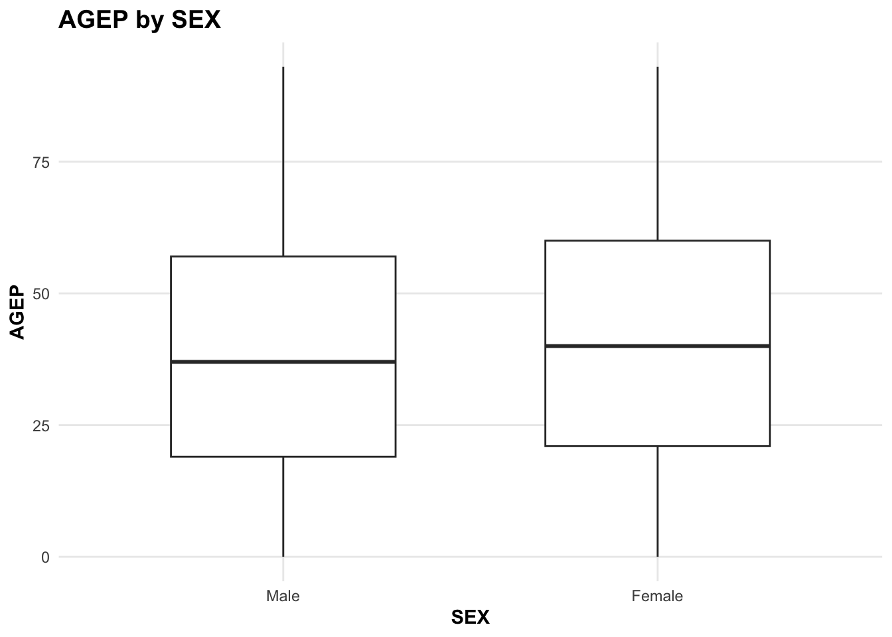
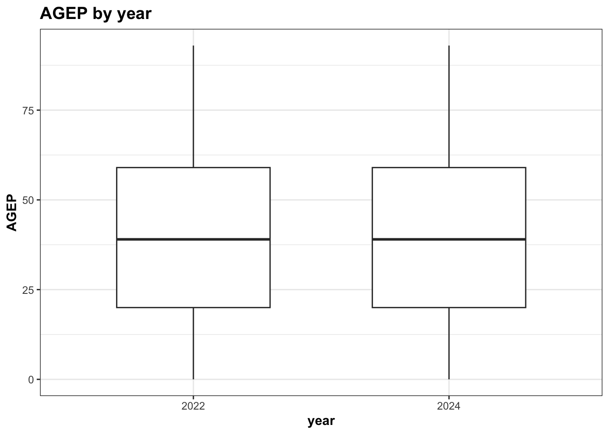
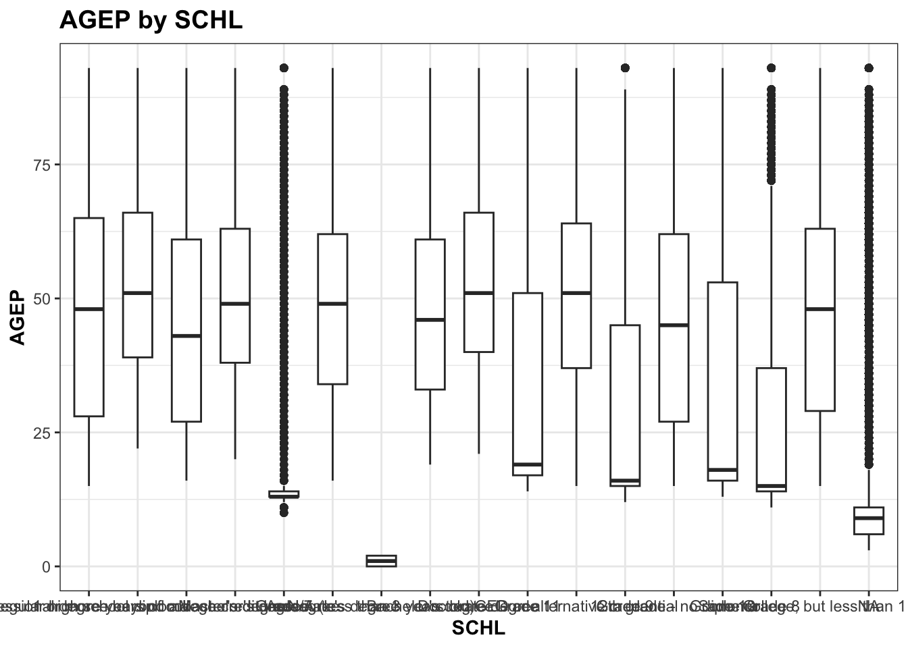
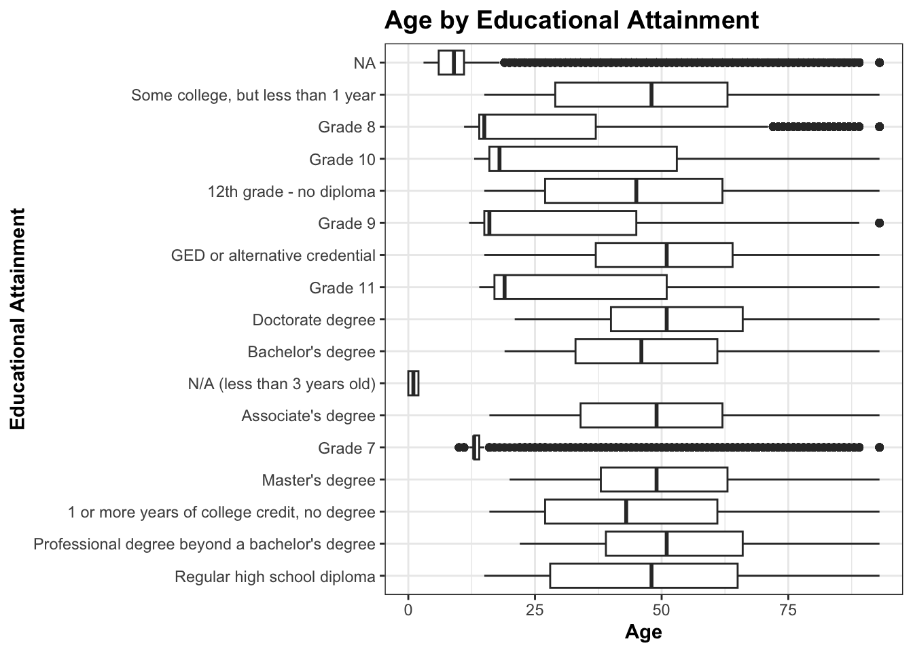
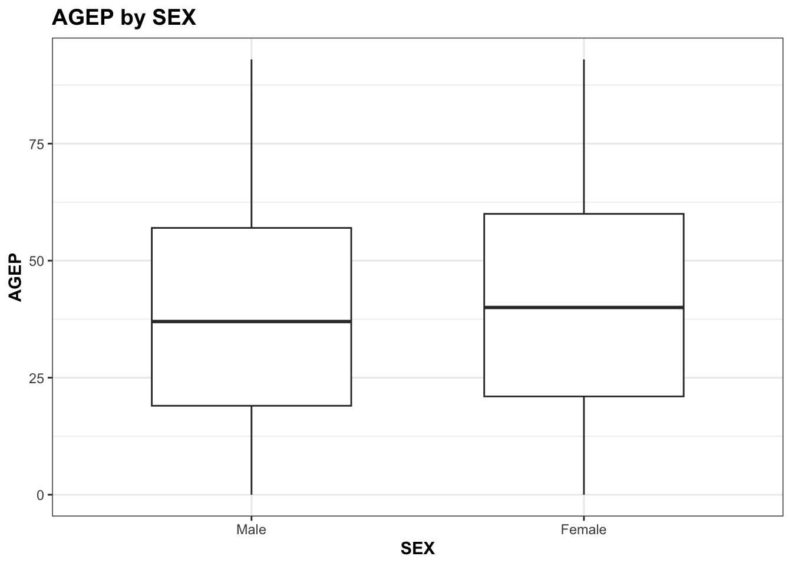

# attach packages
library(httr)
library(jsonlite)
library(tidyverse)
library(lubridate)
library(quantreg)Project 1
Introduction
The goal of this project is to create reusable, generic functions for working with data from the U.S. Census Bureau’s Public Use Microdata Sample (PUMS) API. The functions should be able to retrieve data from different survey years, variables, and geographic areas, and return the data consistently without manually repeating the same data-processing steps.
The PUMS API provides psuedo person-level records, but the records do not represent exactly one person but can represent multiple people. The PWGTP variable is a person weight, which indicates how many people a particular record represents. Because of this, the functions need to account for these weights.
I focused on the PUMS data from 2021 through 2024, and excluded Puerto Rico as stated in the project instructions. My approach was to first understand how the Census API returned data, then create helper functions to process the metadata and special variables, and finally build and test functions that could retrieve, combine, summarize, and plot the data.
Part 1: Data Processing
Part 1 of the project focuses on retrieving and processing the Census API’s PUMS data.
Explore PUMS Census API
I began by making a request to the 2024 Census PUMS API using the example provided in the project instructions. This let me see what the returned data from the Census API looked like.
Since the response was returned as a JSON, I converted it to an R object. The first row contained the variable names, so I saved that row as column_names before removing it from the data. I then converted the response to a tibble and assigned column_names to the tibble with names().
I then used those steps to create a helper function, query_api. This function takes an inputted URL, sends the request, converts the JSON response into an R object, uses the first row as the column names, and returns the remaining data as a tibble. By creating this helper, I made sure that I would not have to repeat the same API-response processing everytime I made a request.
# establish API key
api_key <- "9565ad3d32410ea2b7caa601ff9c5c4467f789d7"
# try calling to API using example
url1 <- paste0(
"https://api.census.gov/data/2024/acs/acs1/pums?",
"get=SEX,PWGTP,MAR&",
"for=state:*&",
"SCHL=24&",
"key=",
api_key
)
response <- GET(url1)
responseResponse [https://api.census.gov/data/2024/acs/acs1/pums?get=SEX,PWGTP,MAR&for=state:*&SCHL=24&key=9565ad3d32410ea2b7caa601ff9c5c4467f789d7]
Date: 2026-10-06 05:11
Status: 200
Content-Type: application/json;charset=utf-8
Size: 1.25 MB
[["SEX","PWGTP","MAR","SCHL","state"],
["2","17","1","24","06"],
["1","58","3","24","39"],
["2","72","2","24","51"],
["2","13","1","24","12"],
["2","37","5","24","27"],
["2","47","5","24","34"],
["1","10","3","24","48"],
["1","24","5","24","17"],
["2","153","4","24","42"],
...# convert response to text/character string &
# parse the JSON text into an R object
data <- fromJSON(rawToChar(response$content))
# look at returned data
head(data) [,1] [,2] [,3] [,4] [,5]
[1,] "SEX" "PWGTP" "MAR" "SCHL" "state"
[2,] "2" "17" "1" "24" "06"
[3,] "1" "58" "3" "24" "39"
[4,] "2" "72" "2" "24" "51"
[5,] "2" "13" "1" "24" "12"
[6,] "2" "37" "5" "24" "27" # make the first row the column names,
# then remove the first row
column_names <- data[1, ]
data <- data[-1, ]
# convert to a tibble
data <- as_tibble(data)
# make sure tibble has the correct column names
names(data) <- column_names
# check
head(data)# A tibble: 6 × 5
SEX PWGTP MAR SCHL state
<chr> <chr> <chr> <chr> <chr>
1 2 17 1 24 06
2 1 58 3 24 39
3 2 72 2 24 51
4 2 13 1 24 12
5 2 37 5 24 27
6 2 47 5 24 34 # use process to create a helper function & then test it
query_api <- function(url) {
response <- GET(url)
data <- fromJSON(rawToChar(response$content))
column_names <- data[1, ]
data <- data[-1, ]
data <- as_tibble(data)
names(data) <- column_names
return(data)
}
query_api_test <- query_api(url1)
query_api_test# A tibble: 47,486 × 5
SEX PWGTP MAR SCHL state
<chr> <chr> <chr> <chr> <chr>
1 2 17 1 24 06
2 1 58 3 24 39
3 2 72 2 24 51
4 2 13 1 24 12
5 2 37 5 24 27
6 2 47 5 24 34
7 1 10 3 24 48
8 1 24 5 24 17
9 2 153 4 24 42
10 2 46 1 24 25
# ℹ 47,476 more rowsParsing Variable Values
The next step was to obtain and understand the metadata for the variables used in the project. The Census API provides a JSON file for the variables of each survey year, which contains various information about the variables.
I created a list of the PUMS variables required for the project, PUMS_var, and then created the get_var() function to retrieve the metadata. Since the Census API uses ST for state in 2021 and 2022 but STATE in 2023 and 2024, I had to account for that in the function so that get_var() could be used for all four years.
# check 2024 PUMS variable data
url_2024 <- "https://api.census.gov/data/2024/acs/acs1/pums/variables.json"
info_2024 <- GET(url_2024)
data_2024 <- fromJSON(rawToChar(info_2024$content))
# inspect structure & variables
str(data_2024, max.level = 2)List of 1
$ variables:List of 524
..$ for :List of 6
..$ in :List of 6
..$ ucgid :List of 6
..$ HHLANP :List of 6
..$ FBATHP :List of 6
..$ DRIVESP :List of 6
..$ WGTP23 :List of 6
..$ WGTP22 :List of 6
..$ WGTP25 :List of 6
..$ WGTP24 :List of 6
..$ RACNH :List of 6
..$ WGTP21 :List of 6
..$ FWATP :List of 6
..$ WGTP20 :List of 6
..$ WGTP27 :List of 6
..$ WGTP26 :List of 6
..$ WGTP29 :List of 6
..$ WGTP28 :List of 6
..$ FBROADBNDP :List of 6
..$ FDRATXP :List of 6
..$ FWKWNP :List of 6
..$ HOTWAT :List of 6
..$ FWKHP :List of 6
..$ FFULP :List of 6
..$ WORKSTAT :List of 6
..$ FRACP :List of 6
..$ FJWDP :List of 6
..$ WGTP34 :List of 6
..$ WGTP33 :List of 6
..$ WGTP36 :List of 6
..$ PINCP :List of 6
..$ WGTP35 :List of 6
..$ FPOBP :List of 6
..$ WGTP30 :List of 6
..$ WGTP32 :List of 6
..$ STOV :List of 6
..$ FMHP :List of 6
..$ WGTP31 :List of 6
..$ RACAIAN :List of 6
..$ WGTP38 :List of 6
..$ WGTP37 :List of 6
..$ WGTP39 :List of 6
..$ PUBCOV :List of 6
..$ SRNT :List of 6
..$ SEX :List of 6
..$ WGTP45 :List of 6
..$ WGTP44 :List of 6
..$ WGTP47 :List of 6
..$ DOUT :List of 6
..$ FACCESSP :List of 6
..$ WGTP46 :List of 6
..$ WGTP41 :List of 6
..$ WGTP40 :List of 6
..$ OTHSVCEX :List of 6
..$ WGTP43 :List of 6
..$ WGTP42 :List of 6
..$ RACPI :List of 6
..$ INDP :List of 6
..$ WGTP49 :List of 6
..$ WGTP48 :List of 6
..$ PRIVCOV :List of 6
..$ SFN :List of 6
..$ FINTP :List of 6
..$ HUPAC :List of 6
..$ SFR :List of 6
..$ WGTP50 :List of 6
..$ FBLDP :List of 6
..$ WGTP56 :List of 6
..$ WGTP55 :List of 6
..$ WGTP58 :List of 6
..$ WGTP57 :List of 6
..$ WGTP52 :List of 6
..$ WGTP51 :List of 6
..$ DEAR :List of 6
..$ WGTP54 :List of 6
..$ DIS :List of 6
..$ WGTP53 :List of 6
..$ ACR :List of 6
..$ VACS :List of 6
..$ FINSP :List of 6
..$ WGTP59 :List of 6
..$ FMILPP :List of 6
..$ ADJHSG :List of 6
..$ MARHYP :List of 6
..$ PAP :List of 6
..$ WGTP7 :List of 6
..$ PWGTP30 :List of 6
..$ WGTP6 :List of 6
..$ PWGTP31 :List of 6
..$ WGTP5 :List of 6
..$ HINCP :List of 6
..$ PWGTP32 :List of 6
..$ WKWN :List of 6
..$ WGTP4 :List of 6
..$ PWGTP33 :List of 6
..$ PWGTP34 :List of 6
..$ PWGTP35 :List of 6
..$ WGTP9 :List of 6
..$ PWGTP36 :List of 6
.. [list output truncated]names(data_2024)[1] "variables"names(data_2024$variables) [1:10] [1] "for" "in" "ucgid" "HHLANP" "FBATHP" "DRIVESP" "WGTP23"
[8] "WGTP22" "WGTP25" "WGTP24" # create function & test it
PUMS_var <- c("AGEP", "GASP", "GRPIP", "JWAP", "JWDP", "JWMNP", "PWGTP",
"FER", "HHL", "SCH", "SCHL", "SEX",
"REGION", "DIVISION")
get_var <- function(year) {
url1 <- paste0(
"https://api.census.gov/data/",
year,
"/acs/acs1/pums/variables.json"
)
response <- GET(url1)
data <- fromJSON(rawToChar(response$content))
# use ST for 2021 and 2022
# use STATE for 2023 and 2024
var <- PUMS_var
if (year %in% c(2021, 2022)) {
var <- c(var, "ST")
} else {
var <- c(var, "STATE")
}
variables <- data$variables[var]
return(variables)
}
test_2024 <- get_var(2024)
names(test_2024) [1] "AGEP" "GASP" "GRPIP" "JWAP" "JWDP" "JWMNP"
[7] "PWGTP" "FER" "HHL" "SCH" "SCHL" "SEX"
[13] "REGION" "DIVISION" "STATE" The function successfully returned the requested variables for 2024, so I repeated the process for 2021 through 2023. I saved the metadata for each survey year as an .rds file in the data folder. Saving the metadata locally will allow for other functions to use the same information.
data_2024 <- get_var(2024)
names(data_2024) [1] "AGEP" "GASP" "GRPIP" "JWAP" "JWDP" "JWMNP"
[7] "PWGTP" "FER" "HHL" "SCH" "SCHL" "SEX"
[13] "REGION" "DIVISION" "STATE" data_2023 <- get_var(2023)
names(data_2023) [1] "AGEP" "GASP" "GRPIP" "JWAP" "JWDP" "JWMNP"
[7] "PWGTP" "FER" "HHL" "SCH" "SCHL" "SEX"
[13] "REGION" "DIVISION" "STATE" data_2022 <- get_var(2022)
names(data_2022) [1] "AGEP" "GASP" "GRPIP" "JWAP" "JWDP" "JWMNP"
[7] "PWGTP" "FER" "HHL" "SCH" "SCHL" "SEX"
[13] "REGION" "DIVISION" "ST" data_2021 <- get_var(2021)
names(data_2021) [1] "AGEP" "GASP" "GRPIP" "JWAP" "JWDP" "JWMNP"
[7] "PWGTP" "FER" "HHL" "SCH" "SCHL" "SEX"
[13] "REGION" "DIVISION" "ST" # save as .rds in data folder
saveRDS(data_2024, "data/data_2024.rds")
saveRDS(data_2023, "data/data_2023.rds")
saveRDS(data_2022, "data/data_2022.rds")
saveRDS(data_2021, "data/data_2021.rds")PUMS Variable Reference
Since the Census variable names are abbreviations, I also created a reference table that showed the variables’ names and descriptions. The descriptions come from the labels in the Census metadata. This will make the variables and results easier to interpret without having to repeatedly look up what each variable means.
var_ref <- tibble(
Variable = PUMS_var,
Description = sapply(PUMS_var, function(x) {
data_2024[[x]]$label
})
)
var_ref# A tibble: 14 × 2
Variable Description
<chr> <chr>
1 AGEP Age
2 GASP Gas cost (monthly cost, use ADJHSG to adjust GASP to constant dolla…
3 GRPIP Gross rent as a percentage of household income past 12 months
4 JWAP Time of arrival at work - hour and minute
5 JWDP Time of departure for work - hour and minute
6 JWMNP Travel time to work
7 PWGTP PUMS person weight
8 FER Gave birth to child within the past 12 months
9 HHL Household language
10 SCH School enrollment
11 SCHL Educational attainment
12 SEX Sex
13 REGION Region code based on 2020 Census definitions
14 DIVISION Division code based on 2020 Census definitions Parsing API Data
I then created helper functions for processing the returned data from the API. I created these helper functions as I was creating the main function (query_census()), but placed them before the main function. These helper functions were for two parts of the main function that required a little bit more work and therefore would keep the the main function looking neater.
Helper Functions
The first helper function I created was get_geo(), which would allow me to retrieve the appropriate geographic values from the metadata. It lets the main function accept a geographic name and determine the corresponding Census code. It also handles the difference between ST and STATE across the survey years and removes Puerto Rico as an acceptable value with !grepl(). Since grepl() returns TRUE when the text is found and FALSE when it is not, and I wanted to exclude Puerto Rico from the data, I put ! before grepl() to reverse the results.
# make helper function to return available geography
get_geo <- function(year, geography) {
# load variable values for selected year
var_data <- readRDS(
paste0(
"data/data_",
year,
".rds"
)
)
# use ST for 2021/2022 and STATE for 2023/2024
if (geography == "State" && year %in% c(2021, 2022)) {
geography <- "ST"
} else {
geography <- toupper(geography)
}
# get selected geography & match them
geo_data <- var_data[[geography]]
# return geography codes and names
geo_val <- unlist(geo_data$values$item)
# remove Puerto Rico
geo_val <- geo_val[!grepl("Puerto Rico", geo_val)
]
return(geo_val)
}
# test helper function
get_geo(2024, "State") 47 04 05
"Tennessee/TN" "Arizona/AZ" "Arkansas/AR"
49 09 50
"Utah/UT" "Connecticut/CT" "Vermont/VT"
28 37 42
"Mississippi/MS" "North Carolina/NC" "Pennsylvania/PA"
45 51 15
"South Carolina/SC" "Virginia/VA" "Hawaii/HI"
25 30 33
"Massachusetts/MA" "Montana/MT" "New Hampshire/NH"
35 12 48
"New Mexico/NM" "Florida/FL" "Texas/TX"
53 13 18
"Washington/WA" "Georgia/GA" "Indiana/IN"
20 26 32
"Kansas/KS" "Michigan/MI" "Nevada/NV"
54 55 27
"West Virginia/WV" "Wisconsin/WI" "Minnesota/MN"
16 19 22
"Idaho/ID" "Iowa/IA" "Louisiana/LA"
38 01 02
"North Dakota/ND" "Alabama/AL" "Alaska/AK"
06 08 11
"California/CA" "Colorado/CO" "District of Columbia/DC"
23 34 39
"Maine/ME" "New Jersey/NJ" "Ohio/OH"
10 56 21
"Delaware/DE" "Wyoming/WY" "Kentucky/KY"
24 44 46
"Maryland/MD" "Rhode Island/RI" "South Dakota/SD"
17 29 31
"Illinois/IL" "Missouri/MO" "Nebraska/NE"
36 40 41
"New York/NY" "Oklahoma/OK" "Oregon/OR" get_geo(2023, "Region") 1 3 4 2
"Northeast" "South" "West" "Midwest" get_geo(2022, "Division") 7 2
"West South Central (South Region)" "Middle Atlantic (Northeast region)"
4 6
"West North Central (Midwest region)" "East South Central (South region)"
3 9
"East North Central (Midwest region)" "Pacific (West region)"
5 8
"South Atlantic (South region)" "Mountain (West region)"
1
"New England (Northeast region)" The second helper function I created was parse_time(), which processes JWAP and JWDP. I had to use AI/LLMs to help figure this part out.
I first converted the codes to character values so they could be matched to the names in the metadata. The code "0" represents a missing value, so I changed those values to return as NA. I then used sprintf() to add leading zeroes to the codes so that they matched the three-digit codes used in the metadata.
Then I used the codes to look up the corresponding time intervals. sub() separates the beginning and ending times of each interval. I converted those strings into time values with strptime(), then calculated the midpoint by adding half of the difference between the ending and beginning times to the starting time. I then used hms::as_hms() to keep only the time of day, so that the returned value represents the approximate midpoint of the five-minute interval rather than the original Census code.
# make helper function that parses the time strings to return midpoint as time value
parse_time <- function(x, time_values) {
# convert codes to character
x <- as.character(x)
# return missing time values ("0") as NA
x[x == "0"] <- NA
# add leading 0's so codes match metadata
x <- ifelse(
is.na(x),
NA,
sprintf("%03d", as.numeric(x)
)
)
# find time interval for each code
intervals <- unname(time_values[x])
# get beginning and ending times
start <- sub(" to .*", "", intervals)
end <- sub(".* to ", "", intervals)
# change Census AM/PM to standard AM/PM
start <- gsub("a\\.m\\.", "AM", start)
start <- gsub("p\\.m\\.", "PM", start)
end <- gsub("a\\.m\\.", "AM", end)
end <- gsub("p\\.m\\.", "PM", end)
# convert into time values
start_time <- strptime(start, format = "%I:%M %p")
end_time <- strptime(end, format = "%I:%M %p")
# calculate midpoint of each interval
midpoint <- start_time + (end_time - start_time) / 2
# return only time of day
midpoint <- hms::as_hms(midpoint)
return(midpoint)
}Main Function
I created the main function, query_census(), with the purpose of making it easier to request PUMS data from the API while also handling validation and data processing automatically.
The function allows the user to specify the survey year, numeric variables, categorical variables, a geographic level, and a specific geographic area. I included several input checks that provide error messages when invalid inputs are supplied. The function makes sure that the year is one of the four years included in this project, that the requested variables are allowed, that PWGTP is included, and that the geographic areas are valid. It also prevents Puerto Rico from being requested. The function uses the metadata stored in the .rds files to identify geographic codes. This allows the user to enter a geographic name instead of having to know the Census code for that state. The user can also enter all to request all values at the selected geographic level.
After retrieving the data from the embedded API query, the function converts the numeric variables to numeric values and categorical variables to factors using the labels stored in the metadata. The two time variables, JWAP and JWDP, are processed usingparse_time(). I also add thecensus` class to the returned tibble so that the summary and plot functions can use the custom methods created later.
# create main parsing function
# first set up description and defaults
query_census <- function(
year = 2024,
numeric_vars = c("AGEP", "PWGTP"),
categorical_vars = "SEX",
geography = "State",
specific_geography = NULL,
api_key
)
{
# check for valid year
if (!year %in% c(2021, 2022, 2023, 2024)) {
stop("year must be in 2021, 2022, 2023, or 2024")
}
# specify numeric variables that can be returned
allowed_num <- c("AGEP", "GASP", "GRPIP", "JWAP", "JWDP", "JWMNP", "PWGTP")
# check
if (!all(numeric_vars %in% allowed_num)) {
stop("Invalid numeric variable. Choose from AGEP, GASP, GRPIP, JWAP, JWDP, JWMNP, and PWGTP.")
}
# make sure PWGTP is always returned
if (!"PWGTP" %in% numeric_vars) {
stop("PWGTP must be included.")
}
# make sure another numeric variable is returned
if (length(numeric_vars) < 2) {
stop("numeric_vars must included PWGTP and at least one other numeric variable.")
}
# specify categorical variables that can be returned
allowed_cat <- c("FER", "HHL", "SCH", "SCHL", "SEX")
# check
if (!all(categorical_vars %in% allowed_cat)) {
stop("Invalid categorical variable. Choose from FER, HHL, SCH, SCHL, and SEX.")
}
# make sure at least one categorical variable is returned
if (length(categorical_vars) < 1) {
stop("At least one categorical variable must be included.")
}
# specify geography levels that can be returned
allowed_geo <- c("State", "Region", "Division")
# make sure only one level can be returned
if (length(geography) != 1 || !geography %in% allowed_geo) {
stop("geography must be either State, Region, or Division.")
}
# specify the available geography that can be subset
geo_values <- get_geo(year, geography)
# if no specific_geography, use North Carolina as default
if(is.null(specific_geography)) {
specific_geography <- "North Carolina"
}
# return error if user requests Puerto Rico
if (grepl("Puerto Rico", specific_geography, ignore.case = TRUE)) {
stop("Puerto Rico is not included in this function.")
}
# find Census code for selected geography
if (specific_geography == "all") {
geo_code <- NULL
} else {
match <- grepl(
specific_geography,
geo_values,
fixed = TRUE
)
geo_code <- names(geo_values)[match]
}
# make sure valid specific geography is returned
if (length(geo_code) == 0 && specific_geography != "all") {
stop("Invalid specific_geography.")
}
# create API query
get_variables <- paste(c(numeric_vars, categorical_vars),
collapse = ","
)
if (specific_geography == "all") {
for_part <- paste0(
tolower(geography),
":*"
)
} else {
for_part <- paste0(
tolower(geography),
":",
geo_code
)
}
# create API URL
url2 <- paste0(
"https://api.census.gov/data/",
year,
"/acs/acs1/pums?",
"get=",
get_variables,
"&for=",
for_part,
"&key=",
api_key
)
# query API
data <- query_api(url2)
# convert numeric variables
for (var in numeric_vars) {
if (var %in% c("JWAP", "JWDP")) {
# get metadata
time_url <- paste0(
"https://api.census.gov/data/",
year,
"/acs/acs1/pums/variables/",
var,
".json"
)
time_response <- GET(time_url)
time_metadata <- fromJSON(
rawToChar(time_response$content)
)
# get time codes and their labels
time_values <- unlist(
time_metadata$values$item
)
# convert time codes to midpoint times
data[[var]] <- parse_time(
data[[var]],
time_values
)
} else {
# convert regular numeric variables to numeric
data[[var]] <- as.numeric(data[[var]])
}
}
# load variable metadata
var_data <- readRDS(paste0("data/data_", year, ".rds"))
# convert categorical variables to factors
for (var in categorical_vars) {
value_labels <- unlist(var_data[[var]]$values$item)
data[[var]] <- factor(
data[[var]],
levels = names(value_labels),
labels = value_labels
)
}
# give the data the census class
class(data) <- c("census", class(data))
return(data)
}Because JWAP and JWDP are represented by coded five-minute intervals, I examined their data separately to understand how the codes correspond to actual times. I retrieved the metadata and saw that it provides the time intervals associated with each code. I used those with parse_time() to convert the values into the midpoint times. I then used query_census() to verify that returned variables’ values were converted to time values.
# JWAP metadata
url <- paste0(
"https://api.census.gov/data/2024/acs/acs1/pums/variables/JWAP.json"
)
response <- GET(url)
fromJSON(rawToChar(response$content))$name
[1] "JWAP"
$label
[1] "Time of arrival at work - hour and minute"
$predicateType
[1] "int"
$group
[1] "N/A"
$limit
[1] 0
$`suggested-weight`
[1] "PWGTP"
$values
$values$item
$values$item$`122`
[1] "10:20 a.m. to 10:24 a.m."
$values$item$`258`
[1] "9:40 p.m. to 9:44 p.m."
$values$item$`260`
[1] "9:50 p.m. to 9:54 p.m."
$values$item$`261`
[1] "9:55 p.m. to 9:59 p.m."
$values$item$`142`
[1] "12:00 p.m. to 12:04 p.m."
$values$item$`146`
[1] "12:20 p.m. to 12:24 p.m."
$values$item$`274`
[1] "11:00 p.m. to 11:04 p.m."
$values$item$`163`
[1] "1:45 p.m. to 1:49 p.m."
$values$item$`165`
[1] "1:55 p.m. to 1:59 p.m."
$values$item$`048`
[1] "4:10 a.m. to 4:14 a.m."
$values$item$`171`
[1] "2:25 p.m. to 2:29 p.m."
$values$item$`058`
[1] "5:00 a.m. to 5:04 a.m."
$values$item$`184`
[1] "3:30 p.m. to 3:34 p.m."
$values$item$`189`
[1] "3:55 p.m. to 3:59 p.m."
$values$item$`192`
[1] "4:10 p.m. to 4:14 p.m."
$values$item$`076`
[1] "6:30 a.m. to 6:34 a.m."
$values$item$`198`
[1] "4:40 p.m. to 4:44 p.m."
$values$item$`091`
[1] "7:45 a.m. to 7:49 a.m."
$values$item$`094`
[1] "8:00 a.m. to 8:04 a.m."
$values$item$`210`
[1] "5:40 p.m. to 5:44 p.m."
$values$item$`218`
[1] "6:20 p.m. to 6:24 p.m."
$values$item$`220`
[1] "6:30 p.m. to 6:34 p.m."
$values$item$`221`
[1] "6:35 p.m. to 6:39 p.m."
$values$item$`222`
[1] "6:40 p.m. to 6:44 p.m."
$values$item$`224`
[1] "6:50 p.m. to 6:54 p.m."
$values$item$`227`
[1] "7:05 p.m. to 7:09 p.m."
$values$item$`228`
[1] "7:10 p.m. to 7:14 p.m."
$values$item$`234`
[1] "7:40 p.m. to 7:44 p.m."
$values$item$`235`
[1] "7:45 p.m. to 7:49 p.m."
$values$item$`121`
[1] "10:15 a.m. to 10:19 a.m."
$values$item$`124`
[1] "10:30 a.m. to 10:34 a.m."
$values$item$`006`
[1] "12:25 a.m. to 12:29 a.m."
$values$item$`008`
[1] "12:40 a.m. to 12:44 a.m."
$values$item$`009`
[1] "12:45 a.m. to 12:49 a.m."
$values$item$`251`
[1] "9:05 p.m. to 9:09 p.m."
$values$item$`011`
[1] "1:00 a.m. to 1:04 a.m."
$values$item$`256`
[1] "9:30 p.m. to 9:34 p.m."
$values$item$`137`
[1] "11:35 a.m. to 11:39 a.m."
$values$item$`017`
[1] "1:30 a.m. to 1:34 a.m."
$values$item$`259`
[1] "9:45 p.m. to 9:49 p.m."
$values$item$`020`
[1] "1:45 a.m. to 1:49 a.m."
$values$item$`262`
[1] "10:00 p.m. to 10:04 p.m."
$values$item$`270`
[1] "10:40 p.m. to 10:44 p.m."
$values$item$`271`
[1] "10:45 p.m. to 10:49 p.m."
$values$item$`031`
[1] "2:45 a.m. to 2:49 a.m."
$values$item$`276`
[1] "11:10 p.m. to 11:14 p.m."
$values$item$`156`
[1] "1:10 p.m. to 1:14 p.m."
$values$item$`039`
[1] "3:25 a.m. to 3:29 a.m."
$values$item$`284`
[1] "11:50 p.m. to 11:54 p.m."
$values$item$`164`
[1] "1:50 p.m. to 1:54 p.m."
$values$item$`173`
[1] "2:35 p.m. to 2:39 p.m."
$values$item$`053`
[1] "4:35 a.m. to 4:39 a.m."
$values$item$`065`
[1] "5:35 a.m. to 5:39 a.m."
$values$item$`075`
[1] "6:25 a.m. to 6:29 a.m."
$values$item$`197`
[1] "4:35 p.m. to 4:39 p.m."
$values$item$`085`
[1] "7:15 a.m. to 7:19 a.m."
$values$item$`090`
[1] "7:40 a.m. to 7:44 a.m."
$values$item$`202`
[1] "5:00 p.m. to 5:04 p.m."
$values$item$`101`
[1] "8:35 a.m. to 8:39 a.m."
$values$item$`107`
[1] "9:05 a.m. to 9:09 a.m."
$values$item$`230`
[1] "7:20 p.m. to 7:24 p.m."
$values$item$`233`
[1] "7:35 p.m. to 7:39 p.m."
$values$item$`117`
[1] "9:55 a.m. to 9:59 a.m."
$values$item$`118`
[1] "10:00 a.m. to 10:04 a.m."
$values$item$`002`
[1] "12:05 a.m. to 12:09 a.m."
$values$item$`004`
[1] "12:15 a.m. to 12:19 a.m."
$values$item$`246`
[1] "8:40 p.m. to 8:44 p.m."
$values$item$`249`
[1] "8:55 p.m. to 8:59 p.m."
$values$item$`129`
[1] "10:55 a.m. to 10:59 a.m."
$values$item$`132`
[1] "11:10 a.m. to 11:14 a.m."
$values$item$`015`
[1] "1:20 a.m. to 1:24 a.m."
$values$item$`257`
[1] "9:35 p.m. to 9:39 p.m."
$values$item$`138`
[1] "11:40 a.m. to 11:44 a.m."
$values$item$`144`
[1] "12:10 p.m. to 12:14 p.m."
$values$item$`148`
[1] "12:30 p.m. to 12:34 p.m."
$values$item$`150`
[1] "12:40 p.m. to 12:44 p.m."
$values$item$`152`
[1] "12:50 p.m. to 12:54 p.m."
$values$item$`273`
[1] "10:55 p.m. to 10:59 p.m."
$values$item$`034`
[1] "3:00 a.m. to 3:04 a.m."
$values$item$`035`
[1] "3:05 a.m. to 3:09 a.m."
$values$item$`277`
[1] "11:15 p.m. to 11:19 p.m."
$values$item$`042`
[1] "3:40 a.m. to 3:44 a.m."
$values$item$`044`
[1] "3:50 a.m. to 3:54 a.m."
$values$item$`166`
[1] "2:00 p.m. to 2:04 p.m."
$values$item$`050`
[1] "4:20 a.m. to 4:24 a.m."
$values$item$`052`
[1] "4:30 a.m. to 4:34 a.m."
$values$item$`055`
[1] "4:45 a.m. to 4:49 a.m."
$values$item$`181`
[1] "3:15 p.m. to 3:19 p.m."
$values$item$`183`
[1] "3:25 p.m. to 3:29 p.m."
$values$item$`069`
[1] "5:55 a.m. to 5:59 a.m."
$values$item$`071`
[1] "6:05 a.m. to 6:09 a.m."
$values$item$`077`
[1] "6:35 a.m. to 6:39 a.m."
$values$item$`079`
[1] "6:45 a.m. to 6:49 a.m."
$values$item$`082`
[1] "7:00 a.m. to 7:04 a.m."
$values$item$`089`
[1] "7:35 a.m. to 7:39 a.m."
$values$item$`092`
[1] "7:50 a.m. to 7:54 a.m."
$values$item$`093`
[1] "7:55 a.m. to 7:59 a.m."
$values$item$`097`
[1] "8:15 a.m. to 8:19 a.m."
$values$item$`205`
[1] "5:15 p.m. to 5:19 p.m."
$values$item$`219`
[1] "6:25 p.m. to 6:29 p.m."
$values$item$`239`
[1] "8:05 p.m. to 8:09 p.m."
$values$item$`244`
[1] "8:30 p.m. to 8:34 p.m."
$values$item$`125`
[1] "10:35 a.m. to 10:39 a.m."
$values$item$`254`
[1] "9:20 p.m. to 9:24 p.m."
$values$item$`013`
[1] "1:10 a.m. to 1:14 a.m."
$values$item$`014`
[1] "1:15 a.m. to 1:19 a.m."
$values$item$`019`
[1] "1:40 a.m. to 1:44 a.m."
$values$item$`140`
[1] "11:50 a.m. to 11:54 a.m."
$values$item$`022`
[1] "2:00 a.m. to 2:04 a.m."
$values$item$`265`
[1] "10:15 p.m. to 10:19 p.m."
$values$item$`272`
[1] "10:50 p.m. to 10:54 p.m."
$values$item$`033`
[1] "2:55 a.m. to 2:59 a.m."
$values$item$`037`
[1] "3:15 a.m. to 3:19 a.m."
$values$item$`041`
[1] "3:35 a.m. to 3:39 a.m."
$values$item$`172`
[1] "2:30 p.m. to 2:34 p.m."
$values$item$`178`
[1] "3:00 p.m. to 3:04 p.m."
$values$item$`059`
[1] "5:05 a.m. to 5:09 a.m."
$values$item$`182`
[1] "3:20 p.m. to 3:24 p.m."
$values$item$`185`
[1] "3:35 p.m. to 3:39 p.m."
$values$item$`187`
[1] "3:45 p.m. to 3:49 p.m."
$values$item$`067`
[1] "5:45 a.m. to 5:49 a.m."
$values$item$`068`
[1] "5:50 a.m. to 5:54 a.m."
$values$item$`074`
[1] "6:20 a.m. to 6:24 a.m."
$values$item$`199`
[1] "4:45 p.m. to 4:49 p.m."
$values$item$`080`
[1] "6:50 a.m. to 6:54 a.m."
$values$item$`084`
[1] "7:10 a.m. to 7:14 a.m."
$values$item$`088`
[1] "7:30 a.m. to 7:34 a.m."
$values$item$`095`
[1] "8:05 a.m. to 8:09 a.m."
$values$item$`206`
[1] "5:20 p.m. to 5:24 p.m."
$values$item$`208`
[1] "5:30 p.m. to 5:34 p.m."
$values$item$`209`
[1] "5:35 p.m. to 5:39 p.m."
$values$item$`100`
[1] "8:30 a.m. to 8:34 a.m."
$values$item$`114`
[1] "9:40 a.m. to 9:44 a.m."
$values$item$`001`
[1] "12:00 a.m. to 12:04 a.m."
$values$item$`243`
[1] "8:25 p.m. to 8:29 p.m."
$values$item$`005`
[1] "12:20 a.m. to 12:24 a.m."
$values$item$`007`
[1] "12:30 a.m. to 12:39 a.m."
$values$item$`135`
[1] "11:25 a.m. to 11:29 a.m."
$values$item$`143`
[1] "12:05 p.m. to 12:09 p.m."
$values$item$`023`
[1] "2:05 a.m. to 2:09 a.m."
$values$item$`025`
[1] "2:15 a.m. to 2:19 a.m."
$values$item$`268`
[1] "10:30 p.m. to 10:34 p.m."
$values$item$`269`
[1] "10:35 p.m. to 10:39 p.m."
$values$item$`149`
[1] "12:35 p.m. to 12:39 p.m."
$values$item$`029`
[1] "2:35 a.m. to 2:39 a.m."
$values$item$`036`
[1] "3:10 a.m. to 3:14 a.m."
$values$item$`157`
[1] "1:15 p.m. to 1:19 p.m."
$values$item$`158`
[1] "1:20 p.m. to 1:24 p.m."
$values$item$`279`
[1] "11:25 p.m. to 11:29 p.m."
$values$item$`160`
[1] "1:30 p.m. to 1:34 p.m."
$values$item$`043`
[1] "3:45 a.m. to 3:49 a.m."
$values$item$`046`
[1] "4:00 a.m. to 4:04 a.m."
$values$item$`170`
[1] "2:20 p.m. to 2:24 p.m."
$values$item$`051`
[1] "4:25 a.m. to 4:29 a.m."
$values$item$`174`
[1] "2:40 p.m. to 2:44 p.m."
$values$item$`056`
[1] "4:50 a.m. to 4:54 a.m."
$values$item$`179`
[1] "3:05 p.m. to 3:09 p.m."
$values$item$`073`
[1] "6:15 a.m. to 6:19 a.m."
$values$item$`194`
[1] "4:20 p.m. to 4:24 p.m."
$values$item$`196`
[1] "4:30 p.m. to 4:34 p.m."
$values$item$`081`
[1] "6:55 a.m. to 6:59 a.m."
$values$item$`098`
[1] "8:20 a.m. to 8:24 a.m."
$values$item$`211`
[1] "5:45 p.m. to 5:49 p.m."
$values$item$`212`
[1] "5:50 p.m. to 5:54 p.m."
$values$item$`214`
[1] "6:00 p.m. to 6:04 p.m."
$values$item$`103`
[1] "8:45 a.m. to 8:49 a.m."
$values$item$`106`
[1] "9:00 a.m. to 9:04 a.m."
$values$item$`111`
[1] "9:25 a.m. to 9:29 a.m."
$values$item$`119`
[1] "10:05 a.m. to 10:09 a.m."
$values$item$`241`
[1] "8:15 p.m. to 8:19 p.m."
$values$item$`123`
[1] "10:25 a.m. to 10:29 a.m."
$values$item$`126`
[1] "10:40 a.m. to 10:44 a.m."
$values$item$`134`
[1] "11:20 a.m. to 11:24 a.m."
$values$item$`016`
[1] "1:25 a.m. to 1:29 a.m."
$values$item$`018`
[1] "1:35 a.m. to 1:39 a.m."
$values$item$`139`
[1] "11:45 a.m. to 11:49 a.m."
$values$item$`141`
[1] "11:55 a.m. to 11:59 a.m."
$values$item$`021`
[1] "1:50 a.m. to 1:59 a.m."
$values$item$`264`
[1] "10:10 p.m. to 10:14 p.m."
$values$item$`266`
[1] "10:20 p.m. to 10:24 p.m."
$values$item$`028`
[1] "2:30 a.m. to 2:34 a.m."
$values$item$`151`
[1] "12:45 p.m. to 12:49 p.m."
$values$item$`153`
[1] "12:55 p.m. to 12:59 p.m."
$values$item$`169`
[1] "2:15 p.m. to 2:19 p.m."
$values$item$`054`
[1] "4:40 a.m. to 4:44 a.m."
$values$item$`180`
[1] "3:10 p.m. to 3:14 p.m."
$values$item$`060`
[1] "5:10 a.m. to 5:14 a.m."
$values$item$`064`
[1] "5:30 a.m. to 5:34 a.m."
$values$item$`070`
[1] "6:00 a.m. to 6:04 a.m."
$values$item$`078`
[1] "6:40 a.m. to 6:44 a.m."
$values$item$`087`
[1] "7:25 a.m. to 7:29 a.m."
$values$item$`203`
[1] "5:05 p.m. to 5:09 p.m."
$values$item$`204`
[1] "5:10 p.m. to 5:14 p.m."
$values$item$`207`
[1] "5:25 p.m. to 5:29 p.m."
$values$item$`215`
[1] "6:05 p.m. to 6:09 p.m."
$values$item$`216`
[1] "6:10 p.m. to 6:14 p.m."
$values$item$`217`
[1] "6:15 p.m. to 6:19 p.m."
$values$item$`223`
[1] "6:45 p.m. to 6:49 p.m."
$values$item$`225`
[1] "6:55 p.m. to 6:59 p.m."
$values$item$`105`
[1] "8:55 a.m. to 8:59 a.m."
$values$item$`232`
[1] "7:30 p.m. to 7:34 p.m."
$values$item$`116`
[1] "9:50 a.m. to 9:54 a.m."
$values$item$`0`
[1] "N/A (not a worker; worker who worked from home)"
$values$item$`003`
[1] "12:10 a.m. to 12:14 a.m."
$values$item$`247`
[1] "8:45 p.m. to 8:49 p.m."
$values$item$`248`
[1] "8:50 p.m. to 8:54 p.m."
$values$item$`128`
[1] "10:50 a.m. to 10:54 a.m."
$values$item$`010`
[1] "12:50 a.m. to 12:59 a.m."
$values$item$`252`
[1] "9:10 p.m. to 9:14 p.m."
$values$item$`253`
[1] "9:15 p.m. to 9:19 p.m."
$values$item$`133`
[1] "11:15 a.m. to 11:19 a.m."
$values$item$`255`
[1] "9:25 p.m. to 9:29 p.m."
$values$item$`136`
[1] "11:30 a.m. to 11:34 a.m."
$values$item$`263`
[1] "10:05 p.m. to 10:09 p.m."
$values$item$`267`
[1] "10:25 p.m. to 10:29 p.m."
$values$item$`147`
[1] "12:25 p.m. to 12:29 p.m."
$values$item$`154`
[1] "1:00 p.m. to 1:04 p.m."
$values$item$`155`
[1] "1:05 p.m. to 1:09 p.m."
$values$item$`278`
[1] "11:20 p.m. to 11:24 p.m."
$values$item$`038`
[1] "3:20 a.m. to 3:24 a.m."
$values$item$`280`
[1] "11:30 p.m. to 11:34 p.m."
$values$item$`281`
[1] "11:35 p.m. to 11:39 p.m."
$values$item$`161`
[1] "1:35 p.m. to 1:39 p.m."
$values$item$`282`
[1] "11:40 p.m. to 11:44 p.m."
$values$item$`162`
[1] "1:40 p.m. to 1:44 p.m."
$values$item$`167`
[1] "2:05 p.m. to 2:09 p.m."
$values$item$`049`
[1] "4:15 a.m. to 4:19 a.m."
$values$item$`175`
[1] "2:45 p.m. to 2:49 p.m."
$values$item$`177`
[1] "2:55 p.m. to 2:59 p.m."
$values$item$`057`
[1] "4:55 a.m. to 4:59 a.m."
$values$item$`061`
[1] "5:15 a.m. to 5:19 a.m."
$values$item$`062`
[1] "5:20 a.m. to 5:24 a.m."
$values$item$`186`
[1] "3:40 p.m. to 3:44 p.m."
$values$item$`190`
[1] "4:00 p.m. to 4:04 p.m."
$values$item$`191`
[1] "4:05 p.m. to 4:09 p.m."
$values$item$`072`
[1] "6:10 a.m. to 6:14 a.m."
$values$item$`193`
[1] "4:15 p.m. to 4:19 p.m."
$values$item$`083`
[1] "7:05 a.m. to 7:09 a.m."
$values$item$`200`
[1] "4:50 p.m. to 4:54 p.m."
$values$item$`201`
[1] "4:55 p.m. to 4:59 p.m."
$values$item$`104`
[1] "8:50 a.m. to 8:54 a.m."
$values$item$`226`
[1] "7:00 p.m. to 7:04 p.m."
$values$item$`108`
[1] "9:10 a.m. to 9:14 a.m."
$values$item$`110`
[1] "9:20 a.m. to 9:24 a.m."
$values$item$`231`
[1] "7:25 p.m. to 7:29 p.m."
$values$item$`112`
[1] "9:30 a.m. to 9:34 a.m."
$values$item$`113`
[1] "9:35 a.m. to 9:39 a.m."
$values$item$`115`
[1] "9:45 a.m. to 9:49 a.m."
$values$item$`236`
[1] "7:50 p.m. to 7:54 p.m."
$values$item$`237`
[1] "7:55 p.m. to 7:59 p.m."
$values$item$`238`
[1] "8:00 p.m. to 8:04 p.m."
$values$item$`240`
[1] "8:10 p.m. to 8:14 p.m."
$values$item$`120`
[1] "10:10 a.m. to 10:14 a.m."
$values$item$`242`
[1] "8:20 p.m. to 8:24 p.m."
$values$item$`245`
[1] "8:35 p.m. to 8:39 p.m."
$values$item$`127`
[1] "10:45 a.m. to 10:49 a.m."
$values$item$`250`
[1] "9:00 p.m. to 9:04 p.m."
$values$item$`130`
[1] "11:00 a.m. to 11:04 a.m."
$values$item$`131`
[1] "11:05 a.m. to 11:09 a.m."
$values$item$`012`
[1] "1:05 a.m. to 1:09 a.m."
$values$item$`024`
[1] "2:10 a.m. to 2:14 a.m."
$values$item$`145`
[1] "12:15 p.m. to 12:19 p.m."
$values$item$`026`
[1] "2:20 a.m. to 2:24 a.m."
$values$item$`027`
[1] "2:25 a.m. to 2:29 a.m."
$values$item$`030`
[1] "2:40 a.m. to 2:44 a.m."
$values$item$`032`
[1] "2:50 a.m. to 2:54 a.m."
$values$item$`275`
[1] "11:05 p.m. to 11:09 p.m."
$values$item$`159`
[1] "1:25 p.m. to 1:29 p.m."
$values$item$`040`
[1] "3:30 a.m. to 3:34 a.m."
$values$item$`283`
[1] "11:45 p.m. to 11:49 p.m."
$values$item$`285`
[1] "11:55 p.m. to 11:59 p.m."
$values$item$`045`
[1] "3:55 a.m. to 3:59 a.m."
$values$item$`047`
[1] "4:05 a.m. to 4:09 a.m."
$values$item$`168`
[1] "2:10 p.m. to 2:14 p.m."
$values$item$`176`
[1] "2:50 p.m. to 2:54 p.m."
$values$item$`063`
[1] "5:25 a.m. to 5:29 a.m."
$values$item$`066`
[1] "5:40 a.m. to 5:44 a.m."
$values$item$`188`
[1] "3:50 p.m. to 3:54 p.m."
$values$item$`195`
[1] "4:25 p.m. to 4:29 p.m."
$values$item$`086`
[1] "7:20 a.m. to 7:24 a.m."
$values$item$`096`
[1] "8:10 a.m. to 8:14 a.m."
$values$item$`099`
[1] "8:25 a.m. to 8:29 a.m."
$values$item$`213`
[1] "5:55 p.m. to 5:59 p.m."
$values$item$`102`
[1] "8:40 a.m. to 8:44 a.m."
$values$item$`229`
[1] "7:15 p.m. to 7:19 p.m."
$values$item$`109`
[1] "9:15 a.m. to 9:19 a.m."jwap_metadata <- fromJSON(rawToChar(response$content))
jwap_values <- unlist(jwap_metadata$values$item)
head(jwap_values) 122 258
"10:20 a.m. to 10:24 a.m." "9:40 p.m. to 9:44 p.m."
260 261
"9:50 p.m. to 9:54 p.m." "9:55 p.m. to 9:59 p.m."
142 146
"12:00 p.m. to 12:04 p.m." "12:20 p.m. to 12:24 p.m." arrive_test <- query_census(
numeric_vars = c("JWAP", "PWGTP"),
api_key = api_key
)
head(arrive_test$JWAP)07:32:00
NA
07:37:00
NA
NA
NAjwap_time <- parse_time(
arrive_test$JWAP,
jwap_values
)
head(jwap_time)NA
NA
NA
NA
NA
NA# JWDP metadata
url <- paste0(
"https://api.census.gov/data/2024/acs/acs1/pums/variables/JWDP.json"
)
response_jwdp <- GET(url)
jwdp_metadata <- fromJSON(rawToChar(response_jwdp$content))
jwdp_values <- unlist(jwdp_metadata$values$item)
head(jwdp_values) 014 015 017
"4:10 a.m. to 4:19 a.m." "4:20 a.m. to 4:29 a.m." "4:40 a.m. to 4:49 a.m."
022 035 046
"5:15 a.m. to 5:19 a.m." "6:20 a.m. to 6:24 a.m." "7:15 a.m. to 7:19 a.m." depart_test <- query_census(
numeric_vars = c("JWDP", "PWGTP"),
api_key = api_key
)
jwdp_time <- parse_time(
depart_test$JWDP,
jwdp_values
)
head(jwdp_time)NA
NA
NA
NA
NA
NAFunction Tests
I tested query_census() using both valid and invalid inputs. The tests include different years, numeric and categorical variables, geographic levels, specific geographic areas, and special time variables. I also tested the default arguments.
For the invalid tests, I used years, variables, and geographic values that would not be allowed to be requested. This showed that the function not only works successfully, but also provides an error when the user provides an invalid argument.
I also checked the classes and factor levels of the returned variables to make sure that the categorical variables are factors, the time variables are stored as time values, and that the overall tibble had the census class.
# test years
# valid
test_2021 <- query_census(
year = 2021,
api_key = api_key
)
head(test_2021)# A tibble: 6 × 4
AGEP PWGTP SEX state
<dbl> <dbl> <fct> <chr>
1 21 78 Male 37
2 58 9 Female 37
3 20 32 Female 37
4 40 6 Female 37
5 21 119 Male 37
6 20 65 Male 37 test_2023 <- query_census(
year = 2023,
api_key = api_key
)
head(test_2023)# A tibble: 6 × 4
AGEP PWGTP SEX state
<dbl> <dbl> <fct> <chr>
1 18 62 Female 37
2 93 94 Female 37
3 22 73 Male 37
4 39 63 Male 37
5 19 50 Male 37
6 39 41 Male 37 # invalid
query_census(
year = 2002,
api_key = api_key
)Error in `query_census()`:
! year must be in 2021, 2022, 2023, or 2024# test numeric variables
# valid
test_numeric <- query_census(
numeric_vars = c("AGEP", "PWGTP"),
api_key = api_key
)
head(test_numeric)# A tibble: 6 × 4
AGEP PWGTP SEX state
<dbl> <dbl> <fct> <chr>
1 23 60 Male 37
2 21 49 Male 37
3 20 24 Male 37
4 79 54 Female 37
5 18 79 Male 37
6 19 54 Female 37 # invalid numeric variables
query_census(
numeric_vars = c("BDSP", "PWGTP"),
api_key = api_key
)Error in `query_census()`:
! Invalid numeric variable. Choose from AGEP, GASP, GRPIP, JWAP, JWDP, JWMNP, and PWGTP.query_census(
numeric_vars = c("AGEP", "GASP"),
api_key = api_key
)Error in `query_census()`:
! PWGTP must be included.query_census(
numeric_vars = "PWGTP",
api_key = api_key
)Error in `query_census()`:
! numeric_vars must included PWGTP and at least one other numeric variable.# test categorical variables
# valid
test_categorical <- query_census(
numeric_vars = c("GASP", "PWGTP"),
categorical_vars = c("FER", "SEX"),
api_key = api_key
)
head(test_categorical)# A tibble: 6 × 5
GASP PWGTP FER SEX state
<dbl> <dbl> <fct> <fct> <chr>
1 3 60 N/A (less than 15 years/greater than 50 years/ male) Male 37
2 3 49 N/A (less than 15 years/greater than 50 years/ male) Male 37
3 3 24 N/A (less than 15 years/greater than 50 years/ male) Male 37
4 3 54 N/A (less than 15 years/greater than 50 years/ male) Female 37
5 3 79 N/A (less than 15 years/greater than 50 years/ male) Male 37
6 3 54 No Female 37 class(test_categorical$SEX)[1] "factor"levels(test_categorical$SEX)[1] "Male" "Female"# invalid
query_census(
categorical_vars = "WAOB",
api_key = api_key
)Error in `query_census()`:
! Invalid categorical variable. Choose from FER, HHL, SCH, SCHL, and SEX.# test geography
# valid
test_geo <- query_census(
geography = "Region",
specific_geography = "South",
api_key = api_key
)
head(test_geo)# A tibble: 6 × 4
AGEP PWGTP SEX region
<dbl> <dbl> <fct> <chr>
1 25 103 Male 3
2 47 38 Male 3
3 35 55 Male 3
4 23 60 Male 3
5 43 8 Female 3
6 46 39 Male 3 test_geo2 <- query_census(
specific_geography = "California",
api_key = api_key
)
head(test_geo2)# A tibble: 6 × 4
AGEP PWGTP SEX state
<dbl> <dbl> <fct> <chr>
1 45 78 Male 06
2 45 39 Male 06
3 21 10 Female 06
4 28 23 Male 06
5 19 53 Female 06
6 56 15 Male 06 # invalid
query_census(
geography = "All",
api_key = api_key
)Error in `query_census()`:
! geography must be either State, Region, or Division.query_census(
geography = c("Region", "Division"),
api_key = api_key
)Error in `query_census()`:
! geography must be either State, Region, or Division.query_census(
specific_geography = "Puerto Rico",
api_key = api_key
)Error in `query_census()`:
! Puerto Rico is not included in this function.query_census(
specific_geography = "Cuba",
api_key = api_key
)Error in `query_census()`:
! Invalid specific_geography.# test default query
test_default <- query_census(
api_key = api_key
)
head(test_default)# A tibble: 6 × 4
AGEP PWGTP SEX state
<dbl> <dbl> <fct> <chr>
1 23 60 Male 37
2 21 49 Male 37
3 20 24 Male 37
4 79 54 Female 37
5 18 79 Male 37
6 19 54 Female 37 # test time variable
test_time <- query_census(
numeric_vars = c("JWAP", "PWGTP"),
api_key = api_key
)
head(test_time$JWAP)07:32:00
NA
07:37:00
NA
NA
NAclass(test_time$JWAP)[1] "hms" "difftime"# test census class
class(test_time)[1] "census" "tbl_df" "tbl" "data.frame"# general test
gen_test <- query_census(
numeric_vars = c("JWAP", "PWGTP"),
api_key = api_key
)
class(gen_test$JWAP)[1] "hms" "difftime"class(gen_test$SEX)[1] "factor"levels(gen_test$SEX)[1] "Male" "Female"head(gen_test$SEX)[1] Male Male Male Female Male Female
Levels: Male FemaleCombining Years
I then created query_census_years() so that multiple survey years could be retrieved and combined within one call, instead of just a single year being retrieved. The function calls query_census() once for every requested year and combines the resulting tibbles using bind_rows(); this is so I did not have to rewrite the API query for each year.
I also added a year variable to each year’s data before combining them so that the same variables could be compared across multiple survey years. I gave the combined data the census class so that R knows to use my custom summary and plot functions later.
# create function to specify multiple years of survey data
query_census_years <- function(
years = c(2021, 2022, 2023, 2024),
numeric_vars = c("AGEP", "PWGTP"),
categorical_vars = "SEX",
geography = "State",
specific_geography = NULL,
api_key
) {
# check for valid years
if (!all(years %in% c(2021, 2022, 2023, 2024))) {
stop("years must be in 2021, 2022, 2023, or 2024")
}
# make sure at least one year in specified
if (length(years) < 1) {
stop("At least one year must be specified.")
}
# create a list to store each year's data
data_list <- list()
# query each year
for (year in years) {
data <- query_census(
year = year,
numeric_vars = numeric_vars,
categorical_vars = categorical_vars,
geography = geography,
specific_geography = specific_geography,
api_key = api_key
)
# add year variable
data$year <- year
data_list[[as.character(year)]] <- data
}
# combine all years into one tibble
data <- bind_rows(data_list)
# give census class
class(data) <- c("census", class(data))
return(data)
}I then tested the function with different combinations of years and variables. I also tests the all option to retrieve data from all states.
These tests showed that the function works properly and can be reused with different inputs.
# test function
combined_test <- query_census_years(
years = c(2022, 2024),
api_key = api_key
)
head(combined_test)# A tibble: 6 × 5
AGEP PWGTP SEX state year
<dbl> <dbl> <fct> <chr> <dbl>
1 23 113 Male 37 2022
2 24 131 Female 37 2022
3 67 48 Male 37 2022
4 71 54 Female 37 2022
5 35 147 Female 37 2022
6 71 66 Male 37 2022table(combined_test$year)
2022 2024
109230 114270 class(combined_test)[1] "census" "census" "tbl_df" "tbl" "data.frame"combined_all_years <- query_census_years(
years = c(2021, 2022, 2023, 2024),
api_key = api_key
)
head(combined_all_years)# A tibble: 6 × 5
AGEP PWGTP SEX state year
<dbl> <dbl> <fct> <chr> <dbl>
1 21 78 Male 37 2021
2 58 9 Female 37 2021
3 20 32 Female 37 2021
4 40 6 Female 37 2021
5 21 119 Male 37 2021
6 20 65 Male 37 2021table(combined_all_years$year)
2021 2022 2023 2024
104337 109230 111920 114270 combined_test2 <- query_census_years(
years = c(2022, 2023, 2024),
numeric_vars = c("GASP", "PWGTP"),
categorical_vars = c("FER", "SEX"),
geography = "State",
specific_geography = "California",
api_key = api_key
)
head(combined_test2)# A tibble: 6 × 6
GASP PWGTP FER SEX state year
<dbl> <dbl> <fct> <fct> <chr> <dbl>
1 3 14 N/A (less than 15 years/greater than 50 years/ … Fema… 06 2022
2 3 27 N/A (less than 15 years/greater than 50 years/ … Male 06 2022
3 3 70 N/A (less than 15 years/greater than 50 years/ … Male 06 2022
4 3 22 No Fema… 06 2022
5 3 8 No Fema… 06 2022
6 3 49 N/A (less than 15 years/greater than 50 years/ … Male 06 2022combined_all_states <- query_census_years(
years = c(2023, 2024),
specific_geography = "all",
api_key = api_key
)
table(combined_all_states$year)
2023 2024
3405809 3422888 Part 2: Writing a Generic Function for Summarizing
Part 2 of the project focuses on creating numerical and graphical summary functions using the census class.
Numeric Summary: Weighted Summary Function
Because PWGTP represents the number of people represented by each record, a regular mean would give every row the same influence, even though different rows can represent different numbers of people. Therefore, I created a summary function that would calculate weighted summaries, summary.census().
For numeric variables, the function calculates a weighted mean and weighted standard deviation using the person weights. I created keep to make sure missing values did not affect the calculations. For categorical variables, it calculates weighted counts for each category, also using person weights. year is treated as categorical when multiple years are requested, since I want to compare the distribution of observations across survey years.
The function lets users specify which numeric and categorical variables to summarize, while excluding the person weight, PWGTP, and the time variables, JWAP and JWDP since they are time values.
# create a function that
# produces means & sds for numeric variables &
# counts for categorical variables
summary.census <- function(
object,
numeric_vars = NULL,
categorical_vars = NULL
) {
# default numeric variables
if (is.null(numeric_vars)) {
numeric_vars <- names(object) [
sapply(object, is.numeric)
]
numeric_vars <- setdiff(
numeric_vars,
c("PWGTP", "JWAP", "JWDP", "year")
)
}
# default categorical variables
if (is.null(categorical_vars)) {
categorical_vars <- names(object) [
sapply(object, is.factor)
]
# include year as a categorical variable
if ("year" %in% names(object)) {
categorical_vars <- unique(
c(categorical_vars, "year")
)
}
}
# create list for numeric summaries
numeric_summary <- list()
# calculate weighted mean and standard deviation
for (var in numeric_vars) {
x <- object[[var]]
w <- object$PWGTP
keep <- !is.na(x) & !is.na(w)
x <- x[keep]
w <- w[keep]
weighted_mean <- sum(x * w) / sum(w)
weighted_sd <- sqrt(
sum(x^2 * w) / sum(w) -
weighted_mean^2
)
numeric_summary[[var]] <- c(
mean = weighted_mean,
sd = weighted_sd
)
}
# create list for categorical summaries
categorical_summary <- list()
# calculate weighted counts
for (var in categorical_vars) {
x <- object[[var]]
# add person weights within each category
categorical_summary[[var]] <- tapply(
object$PWGTP,
x,
sum,
na.rm = TRUE
)
}
# return named lists
return(
list(
numeric = numeric_summary,
categorical = categorical_summary
)
)
}I tested summary_census() to show that the function can summarize different combinations of data while using PWGTP to account for the survey weights. I first tested the default arguments so the function automatically identify the appropriate numeric and categorical variables. I then specified individual variables and combination of variables. I also tested it to ensure year is evaluated as a categorical variable.
# test function
summary(combined_test)$numeric
$numeric$AGEP
mean sd
39.72205 23.23169
$categorical
$categorical$SEX
Male Female
10619992 11125005
$categorical$year
2022 2024
10698973 11046024 summary(
combined_test,
numeric_vars = "AGEP",
categorical_vars = c("SEX", "year")
)$numeric
$numeric$AGEP
mean sd
39.72205 23.23169
$categorical
$categorical$SEX
Male Female
10619992 11125005
$categorical$year
2022 2024
10698973 11046024 summary(
combined_test,
numeric_vars = c("AGEP", "GRPIP"),
categorical_vars = "SEX"
)$numeric
$numeric$AGEP
mean sd
39.72205 23.23169
$numeric$GRPIP
mean sd
NaN NaN
$categorical
$categorical$SEX
Male Female
10619992 11125005 Graphical Summary: Plotting Function
I then created plot_census() to produce weighted boxplots for the returned Census data. It requires the user to specify a categorical variable and a numeric variable, and uses PWGTP as the weight so the plot accounts for the fact that each PUMS record may represent multiple people.
I also made sure year is treated as a categorical variable when used for the x-axis, so the boxplots show separate distributions for each survey year.
# create a generic plot() function that
# creates a boxplot of the numeric variable
# at the levels of the categorical variables
plot.census <- function(
object,
categorical_var,
numeric_var
) {
# make year a categorical variable
if (categorical_var == "year") {
object$year <- factor(object$year)
}
ggplot(
object,
aes(
x = get(categorical_var),
y = get(numeric_var),
weight = PWGTP
)
) +
geom_boxplot(width = 0.6) +
labs(
x = categorical_var,
y = numeric_var,
title = paste(numeric_var, "by", categorical_var)
) +
theme_bw() +
theme(
plot.title = element_text(face = "bold", size = 14),
axis.title = element_text(face = "bold")
)
}I tested plot.census() using different categorical and numeric variables. The first example compares age across sex, while the second compares age across survey years. By using different inputs, the function shows that it can be reused with different combinations of variables.
# test plot function
plot(
combined_test,
categorical_var = "SEX",
numeric_var = "AGEP"
)
plot(
combined_test,
categorical_var = "year",
numeric_var = "AGEP"
)
Investigation
For my investigation, I wanted to examine educational attainment in North Carolina from 2021 to 2024. I was interested in how educational attainment is associated with age and whether the distribution differs between males and females.
Educational Attainment Across Survey Years
I began by retrieving the data using my query_census_years() function.
# get data
nc_edu <- query_census_years(
years = c(2021, 2022, 2023, 2024),
numeric_vars = c("AGEP", "PWGTP"),
categorical_vars = c("SCHL", "SEX"),
geography = "State",
specific_geography = "North Carolina",
api_key = api_key
)
head(nc_edu)# A tibble: 6 × 6
AGEP PWGTP SCHL SEX state year
<dbl> <dbl> <fct> <fct> <chr> <dbl>
1 21 78 1 or more years of college credit, no degree Male 37 2021
2 58 9 Regular high school diploma Female 37 2021
3 20 32 1 or more years of college credit, no degree Female 37 2021
4 40 6 12th grade - no diploma Female 37 2021
5 21 119 1 or more years of college credit, no degree Male 37 2021
6 20 65 1 or more years of college credit, no degree Male 37 2021table(nc_edu$year)
2021 2022 2023 2024
104337 109230 111920 114270 I used my summary() method to examine educational attainment separately for the 2021 and 2024 survey years.
# investigate educational attainment across years
summary(
nc_edu[nc_edu$year == 2021, ],
numeric_vars = "AGEP",
categorical_vars = c("SCHL", "year")
)$numeric
$numeric$AGEP
mean sd
39.50912 23.13070
$categorical
$categorical$SCHL
Regular high school diploma
1850194
No schooling completed
NA
Grade 1
NA
Kindergarten
NA
Grade 4
NA
Professional degree beyond a bachelor's degree
146226
1 or more years of college credit, no degree
1235563
Master's degree
712790
Grade 7
164405
Associate's degree
790805
N/A (less than 3 years old)
334470
Nursery school, preschool
NA
Bachelor's degree
1694924
Grade 5
NA
Doctorate degree
111501
Grade 3
NA
Grade 11
265805
GED or alternative credential
314833
Grade 9
254760
12th grade - no diploma
120529
Grade 10
268731
Grade 2
NA
Grade 8
211770
Some college, but less than 1 year
557531
Grade 6
NA
$categorical$year
2021
10551162 summary(
nc_edu[nc_edu$year == 2024, ],
numeric_vars = "AGEP",
categorical_vars = c("SCHL", "year")
)$numeric
$numeric$AGEP
mean sd
39.80583 23.28099
$categorical
$categorical$SCHL
Regular high school diploma
1934609
No schooling completed
NA
Grade 1
NA
Kindergarten
NA
Grade 4
NA
Professional degree beyond a bachelor's degree
159791
1 or more years of college credit, no degree
1185356
Master's degree
839719
Grade 7
154758
Associate's degree
851912
N/A (less than 3 years old)
363197
Nursery school, preschool
NA
Bachelor's degree
1875603
Grade 5
NA
Doctorate degree
141746
Grade 3
NA
Grade 11
267854
GED or alternative credential
340834
Grade 9
238007
12th grade - no diploma
144730
Grade 10
263063
Grade 2
NA
Grade 8
202304
Some college, but less than 1 year
564713
Grade 6
NA
$categorical$year
2024
11046024 The weighted results show some changes in educational attainment across the four years. The weighted number of people with a bachelor’s degree increased from about 1.69 million in 2021 to 1.88 million in 2024. The weighted number with a master’s degree also increased, from about 713,000 in 2021 to 840,000 in 2024. The weighted number with a doctorate degree increased from about 112,00 to 142,000.
Educational Attainment and Age
Next, I examined the relationship betwen educational attainment and age. While I used my plot.census() function to create a weighted boxplot of age for each educational attainment category, the large number of SCHL categories made the plot difficult to read. Instead, I used a horizontal weighted boxplot to compare the age distributions within each educational attainment category. The Census data contains many educational attainment categories, so placing the categories on the y-axis made the longer category names easier to read and compare.
# investigate education and age
plot(
nc_edu,
categorical_var = "SCHL",
numeric_var = "AGEP"
)
ggplot(
nc_edu,
aes(
y = SCHL,
x = AGEP,
weight = PWGTP
)
) +
geom_boxplot() +
labs(
y = "Educational Attainment",
x = "Age",
title = "Age by Educational Attainment"
) +
theme_bw() +
theme(
plot.title = element_text(face = "bold", size = 14),
axis.title = element_text(face = "bold")
)
The boxplot shows that age distributions vary across the educational attainment categories. The median ages for several of the college and graduate-level categories are around the mid-40s to early 50s. The plot also shows that several categories have a wide range of ages, indicating that people within the same educational attainment category can vary considerably in age.
Educational Attainment and Sex
Then I investigated whether educational attainment differs between males and females. I separated the data into male and female observations, then usedd my weighted summary() function to compare the educational attainment categories for the two groups.
# investigate education and sex
male_data <- nc_edu[
nc_edu$SEX == "Male",
]
female_data <- nc_edu[
nc_edu$SEX == "Female",
]
summary(
male_data,
numeric_vars = "AGEP",
categorical_vars = "SCHL"
)$numeric
$numeric$AGEP
mean sd
38.53187 22.85636
$categorical
$categorical$SCHL
Regular high school diploma
3938427
No schooling completed
NA
Grade 1
NA
Kindergarten
NA
Grade 4
NA
Professional degree beyond a bachelor's degree
319147
1 or more years of college credit, no degree
2278452
Master's degree
1261106
Grade 7
337201
Associate's degree
1359031
N/A (less than 3 years old)
711554
Nursery school, preschool
NA
Bachelor's degree
3298291
Grade 5
NA
Doctorate degree
262675
Grade 3
NA
Grade 11
565661
GED or alternative credential
725014
Grade 9
526841
12th grade - no diploma
285980
Grade 10
553817
Grade 2
NA
Grade 8
449479
Some college, but less than 1 year
1090248
Grade 6
NA summary(
female_data,
numeric_vars = "AGEP",
categorical_vars = "SCHL"
)$numeric
$numeric$AGEP
mean sd
40.76218 23.48580
$categorical
$categorical$SCHL
Regular high school diploma
3623163
No schooling completed
NA
Grade 1
NA
Kindergarten
NA
Grade 4
NA
Professional degree beyond a bachelor's degree
285063
1 or more years of college credit, no degree
2538808
Master's degree
1788704
Grade 7
306357
Associate's degree
1913829
N/A (less than 3 years old)
671799
Nursery school, preschool
NA
Bachelor's degree
3905573
Grade 5
NA
Doctorate degree
237904
Grade 3
NA
Grade 11
494043
GED or alternative credential
586771
Grade 9
457524
12th grade - no diploma
259992
Grade 10
478106
Grade 2
NA
Grade 8
384242
Some college, but less than 1 year
1204242
Grade 6
NA The weighted summaries show differences between males and females in multiple educational attainment categories. The weighted number of people with a bachelor’s degree was about 3.30 million among males and 3.91 million among females. The difference was also noticeable for master’s degrees, with about 1.26 million males and 1.79 million females.
Sex and Age
Because age may also be related to educational attainment, I compared the age distributions of males and females.
# compare age distributions by sex
plot(
nc_edu,
categorical_var = "SEX",
numeric_var = "AGEP"
)
The boxplot shows that the age distributions of males and females are similar, although females have a slightly higher median age. The median age for males is about 37 years and 40 years for females.
Conclusion
Overall, this investigation showed how my Census API PUMS functions can be used to examine questions. It also showed that some variables, such as SCHL, may require additional grouping before they can be easily interpreted.
In North Carolina, the weighted counts for bachelor’s, master’s, and doctorate degrees increased between 2021 and 2024. The boxplot comparing age and educational attainment showed that age distributions varied across education categories. However, because SCHL contains many categories, the comparison was somewhat difficult to interpret in detail. Grouping some of the educational attainment categories could make this comparison easier to understand.
The weighted counts also showed differences between males and females across several educational attainment categories. Females had higher weighted counts for bachelor’s and master’s degrees. The age distributions of males and females were relatively similar, although females had a slightly higher median age.
These results show associations in the data instead of relationships. Since the educational attainment comparisons were based on weighted counts, using percentages would provide a more direct way to compare the distributions across years and between males and females.